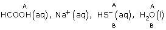
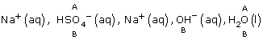

Module 8—Acid-Base Equilibrium
 Self-Check Answers
Self-Check Answers
Contact your teacher if your answers vary significantly from the answers provided here.
SC 2.
Practice 9.
Step 1: HF(aq), Na+(aq), SO42–, H2O(l)
Step 2:
Step 3: Strongest acid: HF(aq)
Strongest base: SO42–(aq)
Step 4: HF(aq) + SO42–(aq) F–(aq) + HSO4–(aq)
Step 5:
The predominant reaction is equilibrium favouring the reactants.
Practice 10.
Step 1: H3O+(aq), ClO4–(aq), Na+(aq), OH–(aq), H2O(l)
Step 2:
Step 3: Strongest acid: H3O+(aq)
Strongest base: OH–(aq)
Step 4: H3O+(aq) + OH–(aq) H2O(l) + H2O(l)
Step 5:
The predominant reaction is a quantitative reaction.
Practice 11.
Step 1: HCOOH(aq), Na+(aq), HS–(aq), H2O(l)
Step 2: 
Step 3: Strongest acid: HCOOH(aq)
Strongest base: HS–(aq)
Step 4:HCOOH(aq) + HS–(aq) H2S(aq) + HCOO–(aq)
Step 5:
The predominant reaction is equilibrium favouring the products.
Practice 12.
Step 1: NH4+(aq), Cl–(aq), Na+(aq), NO3–(aq), H2O(l)
Step 2:
Step 3: Strongest acid: NH4+(aq)
Strongest base: H2O(l)
Step 4: NH4+(aq) + H2O(l) NH3(aq) + H3O+(aq)
Step 5:
The predominant reaction is equilibrium favouring the reactants.
Practice 13.
Step 1: H3O+(aq), NO3–(aq), Na+(aq), CH3COO–(aq), H2O(l)
Step 2:
Step 3: Strongest acid: H3O+(aq)
Strongest base: CH3COO-(aq)
Step 4: H3O+(aq) + CH3COO–(aq) H2O(l) + CH3COOH(aq)
Step 5:
Equilibrium favouring the products is predicted. Empirical testing confirms a quantitive reaction.
Practice 14.
Step 1: Na+(aq), HSO4–(aq), Na+(aq), OH–(aq), H2O(l)
Step 2: 
Step 3: Strongest acid: HSO4–(aq)
Strongest base: OH–(aq)
Step 4: HSO4-(aq) + OH–(aq) SO42–(aq) + H2O(l)
Step 5:
The predominant reaction is equilibrium favouring the products.
Practice 15.
Step 1, 2:
Step 3: Strongest acid: hydronium
Strongest base: water
Step 4: H3O+(aq) + H2O(l) H2O(l) + H3O+(aq)
Step 5:
The predominant reaction is no change; reactants and products are identical.